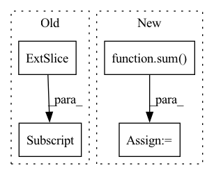

Pattern ID :25960

Before Change
return predictions
def get_loss(self, x):
predictions = self(x[:, :-1])
loss = F.cross_entropy(predictions.reshape(-1, predictions.shape[-1]), x[:, 1:].reshape(-1))
accuracy = (torch.argmax(predictions[:, -1, :], dim=-1) == x[:, -1]).float().mean()
return loss, {"loss": (loss.item(), x.shape[0]*(x.shape[1]-1)), "accuracy": (accuracy.item(), x.shape[0])}
After Change
// print(torch.argmax(predictions[:, -1, :], dim=-1), x[:, -1])
loss = F.cross_entropy(predictions[:, -1, :], y)
accuracy = (torch.argmax(predictions[:, -1, :], dim=-1) == y).float().mean()
attn_entropies = sum([-(attn * torch.log(attn+1e-7)).sum(dim=-1).mean().item() for attn in attns]) / len(attns)
param_norm = parameter_norm(self)
return loss, {"loss": (loss.item(), x.shape[0]), "accuracy": (accuracy.item(), x.shape[0]),
"attn_entropy": (attn_entropies, len(attns)*x.shape[0]*(x.shape[1]-1)), "param_norm": (param_norm, 1)}
In pattern: SUPERPATTERN
Frequency: 3
Non-data size: 4
Instances
Fragment ID: 78412447
Project Name: sea-snell/grokking
Commit Name: 9652db76d1cbdbe66e24e709168b12fa25ba00fc
Time: 2021-11-18
Author: sea_snell@icloud.com
File Name: grokk_replica/grokk_model.py
M Class Name: GrokkModel
N Class Name: GrokkModel
M Method Name: get_loss(3)
N Method Name: get_loss(2)
M Parent Class: nn.Module
N Parent Class: nn.Module
M File Name: grokk_replica/grokk_model.py
N File Name: grokk_replica/grokk_model.py
M Start Line: 17
M End Line: 20
N Start Line: 18
N End Line: 26
'>
Before Change
em = utils.helpers.var_or_cuda(torch.zeros(1, K, H, W))
em[0, 0] = torch.prod(1 - ps, dim=0) // bg prob
em[0, 1:n_objects + 1] = ps // obj prob
em = torch.clamp(em, 1e-7, 1 - 1e-7)
logit = torch.log((em / (1 - em)))
return logit
After Change
em = utils.helpers.var_or_cuda(torch.zeros(B, K, H, W))
for i in range(B):
begin = sum(n_objects[:i])
end = begin + n_objects[i]
em[i, 0] = torch.prod(1 - ps[begin:end], dim=0) // bg prob
em[i, 1:n_objects[i] + 1] = ps[begin:end] // obj prob
'>
Fragment ID: 78412452
Project Name: hzxie/rmnet
Commit Name: aebf655c2d09f097dadb517d95fb828507a85a38
Time: 2020-04-14
Author: root@haozhexie.com
File Name: models/stm.py
M Class Name: STM
N Class Name: STM
M Method Name: soft_aggregation(4)
N Method Name: soft_aggregation(3)
M Parent Class: torch.nn.Module
N Parent Class: torch.nn.Module
M File Name: models/stm.py
N File Name: models/stm.py
M Start Line: 262
M End Line: 264
N Start Line: 261
N End Line: 272
'>
Before Change
if allow_missing_dates is False:
df, _ = add_missing_dates_nan(df, freq=freq)
// impute small gaps linearly:
df.loc[:, column] = df[column].interpolate(method="linear", limit=limit_linear, limit_direction="both")
// fill remaining gaps with rolling avg
is_na = pd.isna(df[column])
rolling_avg = df[column].rolling(rolling + 2 * limit_linear, min_periods=2 * limit_linear, center=True).mean()
After Change
is_na = pd.isna(series)
rolling_avg = series.rolling(rolling + 2 * limit_linear, min_periods=2 * limit_linear, center=True).mean()
series.loc[is_na] = rolling_avg[is_na]
remaining_na = sum(series.isnull())
return series, remaining_na
'>
Fragment ID: 78412449
Project Name: ourownstory/neural_prophet
Commit Name: 7695a7e929b8f865192625c1dda2845fc7282ddc
Time: 2020-12-10
Author: ourownstory@users.noreply.github.com
File Name: neuralprophet/df_utils.py
M Class Name: AnonimousClass
N Class Name: AnonimousClass
M Method Name: fill_linear_then_rolling_avg(3)
N Method Name: fill_linear_then_rolling_avg(6)
M Parent Class:
N Parent Class:
M File Name: neuralprophet/df_utils.py
N File Name: neuralprophet/df_utils.py
M Start Line: 433
M End Line: 458
N Start Line: 315
N End Line: 335